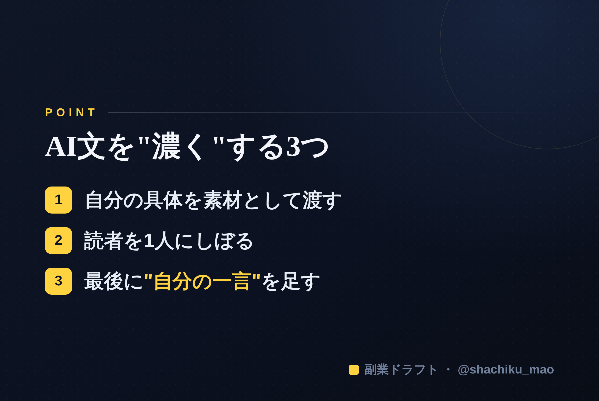

使い方
1. 「タイトルをコピー」→ note のタイトル欄に貼る
2. オレンジのラベルの画像（見出し画像）を note の見出し画像に設定
3. 「本文1をコピー」→ note本文に貼る
4. 青いラベルの位置（本文の途中）に、同じ名前の画像をアップして挿入
5. 「本文2をコピー」→ 続きを貼る
※ 見出しが普通の文字になったら、その行を選んで「大見出し」に設定してください
1. 「タイトルをコピー」→ note のタイトル欄に貼る
2. オレンジのラベルの画像（見出し画像）を note の見出し画像に設定
3. 「本文1をコピー」→ note本文に貼る
4. 青いラベルの位置（本文の途中）に、同じ名前の画像をアップして挿入
5. 「本文2をコピー」→ 続きを貼る
※ 見出しが普通の文字になったら、その行を選んで「大見出し」に設定してください
AIで書いた文章が"薄い"と感じる原因と、濃くする3つの直し方
見出し画像に設定：seo-08.png
AIに書いてもらった文章を読んで「なんか薄いな…」と感じたことはありませんか。その原因は、AIの性能ではなく「渡している情報」にあることがほとんどです。この記事では、AI文が薄くなる理由と、濃くするための具体的な直し方を紹介します。
原因：AIは"あなたの情報"がないと一般論しか書けない
AIは、渡された材料の範囲でしか書けません。指示が「このテーマについて書いて」だけだと、誰にでも当てはまる一般論になります。薄いのは当然なんです。
直し方①：自分の"具体"を素材として渡す
一般論を避ける一番の方法は、自分の経験・数字・具体例を渡すこと。
- ❌「副業の始め方について書いて」
- ⭕️「"発信を続けられず止まる人が多い"という切り口で、仕組み化の話を書いて」
渡す材料が具体的なほど、文章は濃くなります。
直し方②：読者を1人にしぼる
「みんなに役立つ文章」は、誰にも刺さりません。「1年前の自分」など、たった1人に向けて書くと、急に体温が乗ります。AIにも「○○で悩んでいる人ひとりに向けて」と伝えましょう。
直し方③：最後に"自分の一言"を足す
AIが作った文の最後に、自分の意見や問いかけを1行足すだけで、オリジナリティが出ます。AIは土台づくり、仕上げは自分。この役割分担が、薄さを消すコツです。
本文中に挿入：seo-08-body.png（この記事のポイント）

まとめ
- 薄いのは、AIに渡す"具体"が足りないから
- 自分の素材を渡す／読者を1人にしぼる／最後に自分の一言
※ ここからは宣伝です。 「自分の具体をAIに渡して濃い文にする」流れを仕組みにした自作ツール「副業ドラフト」を用意しています。ヒヤリング・強み棚卸し・Threads3本まで無料で試せます → https://note-threadssf.onrender.com
🎁 発信ノウハウは公式LINEで無料配布中 → https://lin.ee/RzyA13P
役に立ったら、スキ＆フォローで応援してもらえると嬉しいです😊